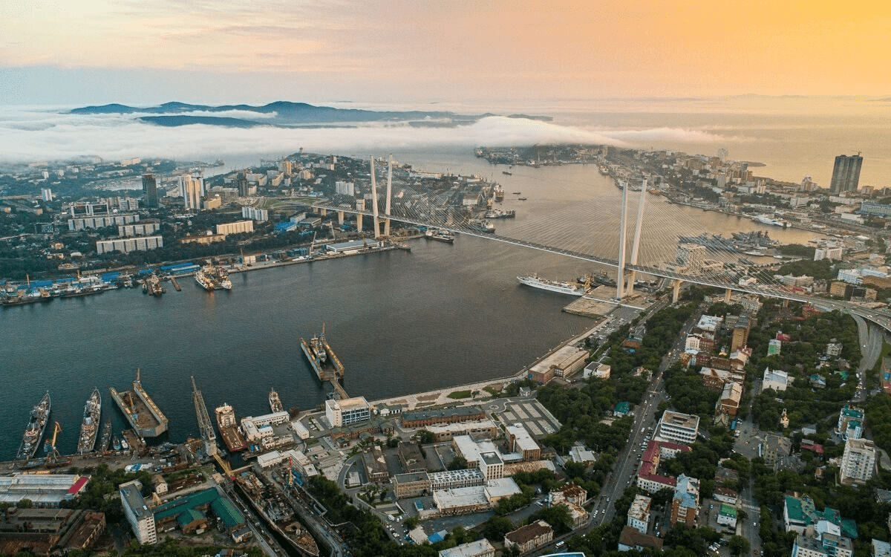
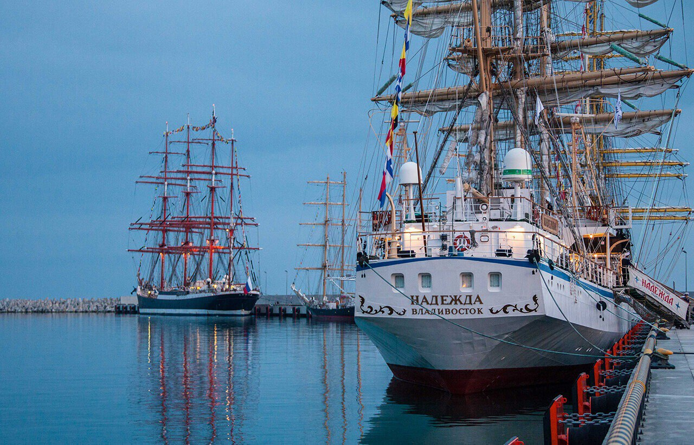
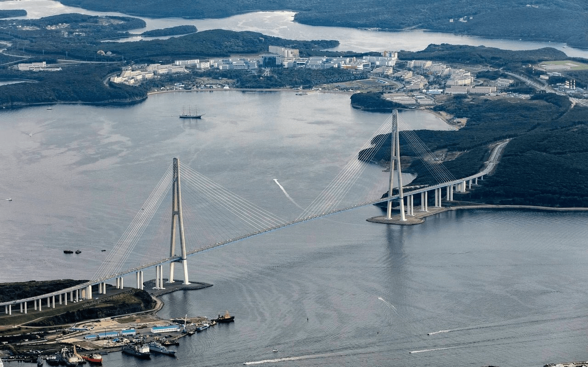
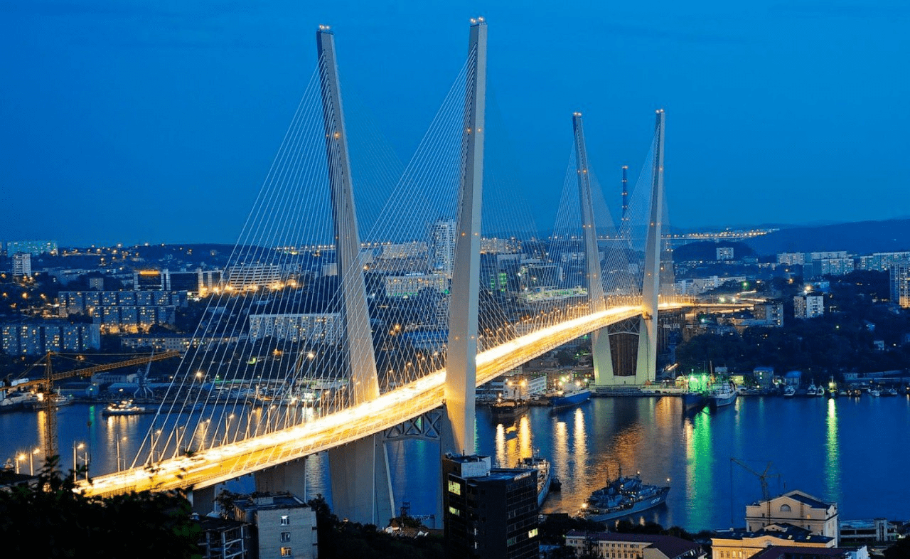
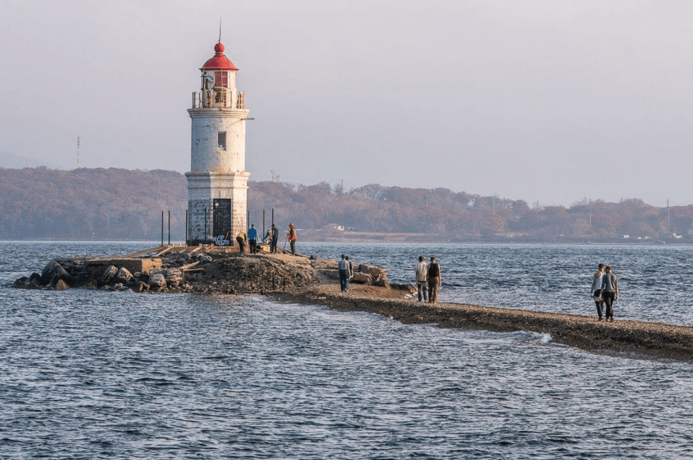

https://www.vlc.ru/ - сайт администрации
https://www.vl.ru/ - новостной портал
https://vladivostok1.ru/ - новостной портал
https://vprimorye125.ru/ – новостной портал
Владивосток, город в России, адм. центр Приморского края, центр Владивостокского гор. округа. Год основания - 1860. Население - 606,6 тыс. чел. (2017). Крупный научный, культурный и экономический центр Дальнего Востока. Большая часть территории города расположена на южной оконечности п-ова Муравьёва-Амурского; в черту Владивостока входят также острова Русский, Попова, Рейнеке и др. (всего 34) и п-ов Песчаный. Омывается водами бухты Золотой Рог, Амурского и Уссурийского заливов. Рельеф городской территории холмистый, образован отрогами хребта Муравьёва-Амурского и расчленён многочисленными речными долинами. Крупный транспортный узел. Владивосток – конечный пункт Транссибирской магистрали. Морской порт (грузооборот 5,6 млн. т, 330 тыс. контейнеров ДФЭ, 2016). Владивосток – конечный пункт федеральной автотрассы «Уссури» (от Хабаровска). Международный аэропорт.
История Владивостока началась 2 июля 1860 года, когда на берегах бухты Золотой Рог по приказу военного губернатора Приморской области контр-адмирала Петра Васильевича Казакевича был основан военный пост, названный Владивостоком. В 1862 году военный пост был переименован в порт, а в 1871 году сюда из Николаевска-на-Амуре была переведена главная морская база Сибирской военной флотилии, ставка военного губернатора и другие морские ведомства. В 1879 году было открыто постоянное пароходное сообщение Владивостока с Санкт-Петербургом и Одессой. В 1880 году Владивосток получил гражданское управление и официально был утверждён в статусе города. В 1958 году во Владивостоке стала располагаться главная база Тихоокеанского военного флота, в связи с чем город был закрыт для посещения иностранцами вплоть до 1 января 1992 года. 20 сентября 1991 года президентом РСФСР Борисом Ельциным был подписан указ № 123 «Об открытии г. Владивостока для посещения иностранными гражданами». С 1 января 1992 года Владивосток перестал быть закрытым городом.
|  | Бухта Золотой Рог Проплывая близ берегов, где позже был основан Владивосток, генерал Н. Н. Муравьёв-Амурский обнаружил неприметную и хорошо защищенную бухту. Она напомнила ему турецкую бухту Золотой Рог, поэтому над названием долго думать не пришлось. Узкая и протяженная на несколько километров, она прекрасно подходила для размещения судов, а рельеф укрывал их от ветра. Сегодня на берегах Золотого Рога работают торговый и рыбный порты, а здешние судоремонтные предприятия ежегодно обслуживают сотни кораблей. Несомненно, бухта — это первая ассоциация, возникающая при упоминании Владивостока. Место привлекает всех, кто любит подолгу смотреть на водную гладь и уплывающие вдаль корабли. |
|  | Фрегаты «Паллада» и «Надежда» Владивосток — один из важнейших портовых городов России, поэтому наличие здесь высших учебных заведений, где готовят будущих моряков, вполне закономерно. Учеба в таком месте — это не только конспекты и лекции, но и тренировки на настоящих судах. На фрегате «Паллада» обучают будущих матросов рыболовного флота, а на «Надежде» — торгового. Высокие мачты и белые паруса этих кораблей навевают ассоциации с фрегатами XVIII–XIX веков, но на деле они были спущены на воду в 1989 и 1991 годах соответственно. И всё же за свою непродолжительную историю «Паллада» побывал в нескольких дальних плаваниях, в том числе и в кругосветном в 2019 году, а «Надежда» не раз становился победителем международных регат. В перерывах между плаваниями оба фрегата находятся на стоянке в бухте и принимают на борт не только моряков, но и влюбленных в море туристов. |
|  | Русский мост В 2012 году остров Русский наконец-то соединили с материком благодаря возведению одноименного моста. Его строительство началось в 2008 и было приурочено к предстоящему саммиту АТЭС, а бюджет составил около 1 млрд долларов. По заявлению создателей моста, он стал одним из самых сложных и уникальных по своей конструкции во всей России. Открытие моста было важным событием, ведь до этого соединить остров с материком пытались дважды, но каждый раз дальше проекта на бумаге не доходило. Даже если вы впервые слышите о Русском мосте, то наверняка видели его, ведь именно он красуется на реверсе 2000-рублевой купюры. Красота и размеры моста завораживают, а ночная подсветка делает его особенно фотогеничным. |
|  | Золотой мост Продолжает список символов Владивостока Золотой мост. Как и в случае с мостом до острова Русский, соединить берега бухты Золотой Рог планировали ещё с момента основания Владивостока, но всегда что-то мешало реализации задуманного. В первой половине XX века мост не появился из-за многочисленных войн и революции, а после уже не хватало денег и он оказался не таким уж важным. В теплый августовский день 2012 года Золотой мост наконец-то открыли и запустили по нему автомобильное и пешеходное движение. В 2015, однако, проход для пешеходов оказался закрыт, поэтому уже не удастся подолгу стоять на Золотом мосту и любоваться этим чудом инженерной мысли. И всё же Владивосток немаленький, поэтому по всему городу вы найдете множество локаций, откуда можно сделать отличную фотографию с видом на мост. |
|  | Маяк «Токаревская кошка» Для создания маяка, необходимого для безопасного прохода судов в бухту, в начале прошлого века специально создали искусственную насыпь. Тогда на картах такие отмели называли «косками», но из-за фонетического сходства постепенно термин превратился в «кошку». В 1913 году был построен существующий ныне маяк, оборудование для которого привезли из Франции, находящейся в нескольких тысячах километрах от Владивостока. Несмотря на то, что многие маяки в современном мире оказались не востребованы, Токаревский продолжает работу и при этом привлекает внимание туристов. Причин у этого несколько и первая — фотогеничность, ведь мало где ещё можно найти столь красивую локацию со столь живописным старинным маяком. Вторая причина — это осознание того факта, что, стоя здесь, вы находитесь на одной из крайних точек континента, за которой уже начинается Тихий океан. И последняя по списку, но не по значению — это тюлени, которые обожают нежиться на солнце неподалеку от маяка зимой. |
Поют ветра о памяти сражений.
Волнами мужества наполнен океан.
Он кораблям пристанищем последним
И морякам навеки колыбелью,
И доблести свидетелем их стал.
На границе великой державы
Свой недремлющий взор на Восток
Держит гордо и свято город воинской славы,
Наша крепость – Владивосток.
Историй боевых он знал немало
И вдохновлял присягою бойцов,
Достойных подвига бессмертного “Варяга”,
За честь стоящих корабля и флага,
Во славу павших русских моряков.
И пусть молчат береговые батареи,
И поросли травой орудия портов.
Следами памяти увенчаны аллеи,
Но корабли, стоящие на рейде,
Хранят покой и мир у берегов.